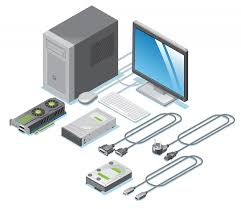

Bien que j'apprécie grandement le développement web, particulièrement pour la partie front-end tout en restant ouvert au back-end, mon stage chez FlowUP a été une véritable révélation. Il a confirmé mon amour pour le hardware dans sa globalité. J'ai toujours aimé l'aspect concret de l'informatique, que ce soit pour manipuler, démonter ou remonter du matériel.
Aujourd'hui, mon projet professionnel est d'explorer pleinement cet univers. Sans vouloir m'enfermer immédiatement dans un rôle précis comme celui de technicien d'infrastructure, je suis prêt et avide de découvrir tout ce que ce vaste domaine a à offrir, de l'assemblage physique à la configuration d'infrastructures réseaux, afin de trouver la spécialité matérielle qui me passionnera le plus pour la suite de ma carrière.
Sur le plan personnel et professionnel, je me caractérise avant tout par ma curiosité et mon envie constante d'apprendre. L'informatique étant un milieu en perpétuelle évolution, je suis toujours avide de découvrir de nouvelles technologies, de comprendre le fonctionnement des équipements et d'élargir mon champ de compétences. Cette soif de connaissances s'accompagne d'une grande polyvalence. En effet, mon cursus me permet de naviguer aisément entre les enjeux du logiciel et ceux du matériel, m'offrant ainsi une vision globale et une bonne capacité d'adaptation.
Cependant, ce profil s'accompagne de certains points de vigilance que j'apprends à maîtriser. Par exemple, ayant à cœur de bien faire et craignant de commettre des erreurs, j'ai tendance à poser beaucoup de questions lorsque je prends en main un nouveau projet. Si cela nécessite un peu plus d'échanges au démarrage, c'est pour m'assurer d'avancer sur des bases solides. Par ailleurs, mon esprit très pragmatique fait que j'ai un profond besoin de concret. J'ai parfois du mal à me contenter de concepts purement théoriques et j'ai besoin de manipuler pour maintenir ma motivation. Enfin, ma volonté d'explorer tout ce que le domaine de l'infrastructure a à offrir fait que je suis encore dans une phase de découverte. Je suis un profil pour le moment généraliste, qui prend le temps d'expérimenter avant de choisir la spécialisation matérielle qui deviendra sa véritable expertise.